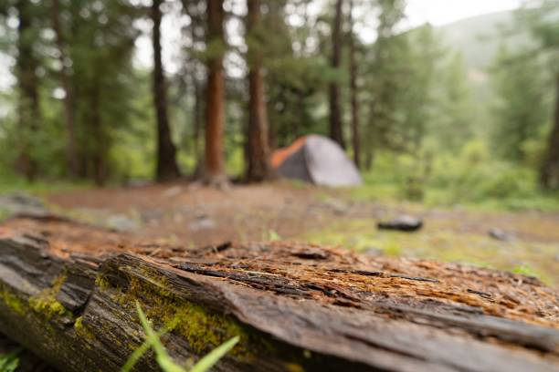

Himalayan Annapurna Base Camp Trek
Trek to the iconic Annapurna Base Camp (4,130m) through rhododendron forests, traditional villages, and breathtaking alpine scenery.
Highlights
- Spectacular views of Annapurna massif
- Immerse in Gurung & Magar culture
- Hot springs & tea houses along the route
Included Equipment
- Duffel bag & daypack
- Trekking poles
- Down sleeping bag (-10°C rating)
- Waterproof jacket & pants
- Group first-aid kit